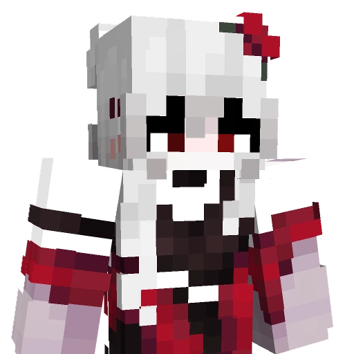

Historia, która zmienia się z każdym kolejnym rozdziałem.
Kraina Twórców to coś więcej niż zwykły serwer Minecraft. To rozbudowane, fabularne uniwersum, gdzie autorska mechanika kryształów i skomplikowane relacje między graczami tworzą wielogodzinne, kinowe przeżycie.
Wejdź do świata Krainy Twórców
Krótka zapowiedź pokazuje klimat projektu, jego bohaterów oraz początki historii. To najlepszy punkt startowy przed przejściem do pełnej opowieści na YouTube.
 ▶
▶
Kraina Twórców | Oficjalny Zwiastun
Oglądaj historię z różnych perspektyw
Każdy twórca przedstawia wydarzenia ze swojej perspektywy, rozwijając wspólne uniwersum Krainy Twórców.

Nieskot
Postać uwikłana w wydarzenia odkrywające coraz mroczniejsze tajemnice świata.

Rekskyy
Tajemnicza postać balansująca pomiędzy chaosem, kontrolą i własnymi ukrytymi motywami.

Dombeek
Postać, która występuje przeciwko problemowi władzy. Wierzy, że jest w stanie utrzymać pokój.

pawelul
Postać, która zamiast unikać chaosu, zamienia go w swoją największą broń i zawsze znajduje sposób, by wyjść cało z sytuacji, z których inni by nie wrócili.
IceHost
Hosting serwera Kraina Twórców zapewnia IceHost. Dzięki ich wsparciu serwer działa stabilnie, szybko i bezpiecznie.
Przejdź do IceHost ↗
Regulamin Projektu
Ostatnia aktualizacja: 27.06.2026
§1.1. Nieskot to chuj
- Atmosfera i Szacunek: Kategorycznie zakazuje się obrażania, poniżania, dyskryminacji oraz wszelkich innych form agresji słownej wobec uczestników projektu.
- Treści Niestosowne: Zabrania się publikowania materiałów drastycznych (NSFW/Gore), podejrzanych linków, oprogramowania złośliwego oraz reklamowania innych projektów.
- Tematy Wrażliwe: Zakazuje się poruszania tematów politycznych, religijnych oraz światopoglądowych, które nie są bezpośrednio związane z fabułą projektu, w celu uniknięcia konfliktów.
- Poufność i Bezpieczeństwo: Zabrania się udostępniania danych wrażliwych (doxxing), wyłudzania informacji oraz oszukiwania lub okradania innych uczestników społeczności.
- Tożsamość: Surowo zakazuje się podszywania pod innych użytkowników, członków administracji, moderacji oraz oficjalne postacie fabularne.
§1.2. Komunikacja i Porządek
- Kontakt z Administracją: Oznaczanie (pingowanie) Administracji i Moderacji jest dozwolone wyłącznie w nagłych przypadkach. W pozostałych sprawach należy korzystać z systemu ticketów na kanale #🎫┃rekrutacja.
- Kultura Języka: Zachowaj umiar w używaniu wulgaryzmów. Nadmierne przeklinanie i toksyczność będą traktowane jako brak kultury i mogą skutkować upomnieniem lub wyciszeniem.
- Estetyka Chatu: Zakazuje się spamu, floodu (powtarzania znaków/wiadomości) oraz nadużywania wielkich liter (Caps Lock). Ogólny chat służy do przejrzystej rozmowy.
- Kanały Głosowe: Podczas korzystania z publicznych kanałów głosowych zabrania się używania irytujących modulatorów głosu, bindów dźwiękowych (soundboardów) oraz celowego hałasowania.
- Kanał Propozycji: Na kanale #💼┃propozycje dozwolone są wyłącznie merytoryczne pomysły. Treści obraźliwe, wulgarne lub niemające sensu będą natychmiast usuwane.
- Nadużywanie Ticketów: Tworzenie zgłoszeń bez wyraźnego powodu lub w niewłaściwej kategorii jest zabronione. Celowe zatykanie systemu ticketów skutkuje ograniczeniem dostępu do pomocy lub banem.
§1.3. Formularze Rekrutacyjne
Wszystkie dane osobowe oraz informacje podane dobrowolnie w formularzach rekrutacyjnych są przetwarzane i wykorzystywane wyłącznie na potrzeby weryfikacji i procesu rekrutacji do oficjalnego projektu Kraina Twórców.
§1.4. Postanowienia Końcowe
Każdy użytkownik jest zobowiązany do przestrzegania Regulaminu platformy Discord. Nieznajomość powyższych zasad w żadnym wypadku nie zwalnia z odpowiedzialności za ich łamanie. Administracja zastrzega sobie prawo do wprowadzania zmian w Regulaminie, o czym poinformuje na dedykowanym kanale #⚙️┃zmiany.
§2.1. Postanowienia Ogólne
- Definicja Projektu: Kraina Twórców to zamknięty, fabularny projekt typu Scripted SMP realizowany bezpośrednio na serwerze Minecraft podczas zaplanowanych sesji nagraniowych.
- Publikacja Materiałów: Każdy oficjalny uczestnik ma prawo nagrywać materiał ze swojej perspektywy i opublikować go na swoim kanale, jednak dopiero po premierze głównego filmu z danej sesji. Wcześniejsza publikacja (leak) skutkuje natychmiastowym wydaleniem z projektu.
- Dostęp do Serwera: Serwer w określonych momentach może być publiczny, jednak aktywny udział w linii fabularnej oraz wstęp do stref nagrań zależy wyłącznie od posiadanej rangi oraz decyzji Włodarzy.
§2.2. Tożsamość Utajniona (System Nicked)
- Nadawanie Statusu: Funkcja techniczna ukrywania tożsamości (Nicked) jest przyznawana wyłącznie przez Włodarzy i Administrację na potrzeby realizacji scenariusza.
- Bezwzględna Anonimowość: Osoba posiadająca status ukrytego nicku ma absolutny obowiązek zachowania swojej tożsamości w tajemnicy przed innymi graczami i widzami.
- Komunikacja Głosowa: Administracja ma prawo wymagać od ukrytego gracza korzystania ze specjalnego modulatora głosu lub całkowitego wyciszenia mikrofonu w celu zachowania tajemnicy fabularnej.
§2.3. Sesje Nagraniowe i Dyscyplina
- Obecność Członków: Osoby posiadające rolę "Członek" mają obowiązek zgłaszania każdej nieobecności na sesji nagraniowej z odpowiednim wyprzedzeniem. Powtarzające się, nieusprawiedliwione nieobecności prowadzą do utraty roli.
- Statyści i Osoby bez roli: Uczestniczą w nagraniach dobrowolnie. Podczas trwania sesji muszą bezwzględnie stosować się do poleceń reżyserskich Administracji pod rygorem natychmiastowego wyrzucenia z serwera.
- Trollowanie i Przeszkadzanie: Celowe utrudnianie nagrań, wchodzenie w kadr, niszczenie mapy (griefing) lub rozpraszanie aktorów w trakcie odgrywania scen jest surowo zabronione i karane permanentnym banem.
§2.4. Zasady Fabularne i Kreatywność
- Inicjatywa Graczy: Włodarze chętnie przyjmują pomysły na rozwój wątków. Każda propozycja fabularna musi jednak zostać zgłoszona, omówiona i oficjalnie zatwierdzona przez Produkcję przed rozpoczęciem danej sesji.
- Immersja (RP): Podczas nagrań obowiązuje całkowity zakaz wychodzenia z roli (brak rozmów OOC - Out Of Character). Wszystkie działania i dialogi muszą pasować do realiów świata gry.
§2.5. Media i Poufność
- Zakaz Spoilerów: Publikowanie zrzutów ekranu, fragmentów wideo, prowadzenie transmisji na żywo (streamów) lub zdradzanie szczegółów scenariusza przed premierą oficjalnego odcinka jest całkowicie zabronione.
- Zgoda na Wizerunek: Dołączając do serwera podczas sesji nagraniowych, każdy uczestnik wyraża automatyczną i bezwarunkową zgodę na wykorzystanie swojego głosu oraz wizerunku postaci (skina) w filmach tworzonych przez Twórców projektu.
- Materiały po usunięciu: W przypadku zbanowania lub odejścia gracza z projektu, Włodarze zachowują pełne prawo do wykorzystania nagranych wcześniej materiałów z udziałem tej osoby.
§2.6. Zasady Techniczne i Fair Play
- Modyfikacje Niedozwolone: Używanie jakichkolwiek cheatów, skryptów, tekstur typu X-Ray czy modyfikacji dających nieuczciwą przewagę nad innymi graczami skutkuje natychmiastowym i permanentnym banem bez możliwości odwołania.
- Wymagania Sprzętowe: Każdy gracz biorący czynny udział w fabule musi posiadać w pełni sprawny mikrofon (brak szumów) oraz stabilne połączenie internetowe, które nie zakłóca płynności nagrania.
§2.7. Sankcje
- Na platformie Discord: Naruszenie zasad skutkuje ostrzeżeniem (warn), czasowym wyciszeniem (mute) lub permanentną blokadą konta.
- Na serwerze Minecraft: Działania na szkodę fabuły, spoilery, griefing, cheaty lub lekceważenie Administracji skutkują natychmiastowym, permanentnym banem na serwerze gry.
- Administracja zawsze zastrzega sobie prawo do indywidualnej, ostatecznej oceny każdego przewinienia i dopasowania kary poza taryfikatorem.
§3.1. Administrator i zakres danych
Właścicielem witryny oraz administratorem danych jest projekt Kraina Twórców. Witryna ma charakter informacyjny i nie gromadzi danych, jednak w ramach świadczenia usług serwera Minecraft przetwarzamy określone informacje.
Podczas łączenia się i gry na naszym serwerze Minecraft, systemy automatycznie gromadzą i przetwarzają dane techniczne: adres IP, nazwę użytkownika (nick), identyfikator UUID, logi z czatu oraz historię aktywności na serwerze.
Dane te są przetwarzane wyłącznie w prawnie uzasadnionym interesie administratora, czyli w celu zapewnienia bezpieczeństwa serwera, ochrony przed nadużyciami (np. blokowanie kont oszukujących graczy), zarządzania karami (bany) oraz rozwiązywania problemów technicznych.
§3.2. Kontakt
Wszelkie pytania dotyczące projektu oraz ochrony prywatności można kierować pod adres e-mail: Ładowanie... lub poprzez oficjalny serwer Discord .
§3.3. Twoje prawa
Zgodnie z ogólnym rozporządzeniem o ochronie danych (RODO), każdemu użytkownikowi przysługuje szereg praw związanych z przetwarzaniem jego danych. Masz prawo do:
- Dostępu do swoich danych oraz otrzymania ich kopii.
- Sprostowania (poprawiania) swoich danych technicznych i profilowych.
- Usunięcia danych (tzw. "prawo do bycia zapomnianym") – uwaga: nie dotyczy to danych niezbędnych do utrzymania nałożonych blokad (banów) w celu ochrony serwera.
- Ograniczenia przetwarzania danych oraz wniesienia sprzeciwu wobec ich przetwarzania z przyczyn szczególnych.
W celu realizacji swoich praw, skontaktuj się z nami poprzez adres e-mail lub oficjalny serwer Discord podany w §3.2.
Najczęściej Zadawane Pytania
Ostatnia aktualizacja: 27.06.2026
Jak dostać się na nagrywkę?
Są na to dwa sposoby w zależności od roli, jaką chcesz pełnić:
- Jako statysta (Nicked): W dzień nagrywki, kiedy na serwerze zostaje otworzone podium, musisz po prostu wejść na nie na czas.
- Jako oficjalny Członek z rolą: Musisz przejść proces rekrutacji. W tym celu złóż oficjalne podanie na naszym Discordzie na kanale #🎫┃rekrutacja.
Kiedy odbywają się nagrywki?
Harmonogram wszystkich nadchodzących sesji znajdziesz bezpośrednio na naszym serwerze Discord. Wszystko jest dokładnie rozpisane w sekcji wydarzeń na samej górze listy kanałów:
- Na komputerze: Kliknij w ikonę kalendarza z napisem "Przeglądaj wydarzenia" na samym szczycie listy.
- Na telefonie: Stuknij w charakterystyczną emotkę kalendarza wyświetlaną nad kanałami tekstowymi.
Czy można nagrywać materiały na swój własny kanał?
Tak. Jeśli uczestniczyłeś w sesji, możesz nagrać materiał ze
swojej perspektywy i opublikować go na własnym kanale, ale dopiero po premierze
oficjalnego odcinka z danej sesji. Wcześniejsza publikacja jest zabroniona.
Fan-content: Kompilacje, analizy i inne materiały tworzone na
podstawie opublikowanych odcinków są dozwolone, o ile wskazują źródło i nie
sugerują oficjalnej współpracy z projektem.
Czym dokładnie jest Kraina Twórców?
Kraina Twórców to fabularny projekt typu Scripted SMP osadzony w świecie Minecrafta. Rozbudowane historie, autorskie postacie oraz zaplanowane wydarzenia tworzą wielowątkowe uniwersum przypominające serial opowiadany z różnych perspektyw. Projekt łączy roleplay, storytelling i dynamiczne zwroty akcji, budując historię śledzoną przez tysiące widzów.
Jaki jest lore tego świata?
Wiele lat temu powstała pewna kraina, gdzie zaczęli pojawiać się pierwsi gracze. Atmosfera była dość pokojowa - gracze budowali budowle, wygłupiali się i wspólnie spędzali czas. Jednakże po jakimś czasie zaczęło pojawiać się coraz więcej osób, co doprowadziło do pierwszych walk. Wielu pokojowych graczy chowało się w podziemiach na dalekich koordynatach, inni przechodzili na złą stronę.
Wtedy również rządził pierwszy władca serwera, który był koszmarny dla wielu osób. Kazał osobom, które się jemu sprzeciwiały, jak i swoim poddanym, niszczyć kryształy, które dają możliwość ponownego odrodzenia się po śmierci. Po jakimś czasie wybuchła wojna w równoległej krainie, której skutkiem było to, że każdy po zostaniu wyeliminowanym za pomocą nielegalnego miecza, lądował w głównej krainie.
Co to jest "System Nicked" wspomniany w regulaminie?
System Nicked to techniczne narzędzie pozwalające ukryć lub całkowicie zmienić nick gracza nad głową oraz na liście tab. Is to kluczowy element budowania tajemniczości w scenariuszu. Gracz z taką funkcją ma kategoryczny zakaz wyjawiania kim jest, a w zależności od wytycznych reżyserskich musi używać specjalnego modulatora dźwięku lub grać bez używania mikrofonu.
Gdzie zgłaszać błędy lub propozycje fabularne?
Wszystkie sprawy techniczne, problemy z grą oraz kreatywne pomysły przyjmujemy na naszym serwerze Discord. Od spraw spornych i błędów posiadamy specjalny system ticketów (#📥┃stwórz-ticket), z kolei merytoryczne pomysły na rozwój świata gry możecie wysyłać na kanale #💼┃propozycje.